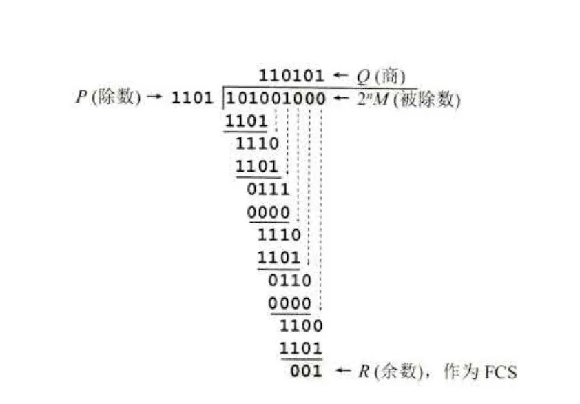
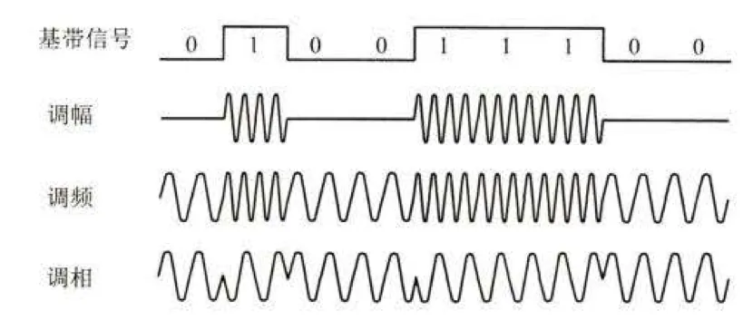
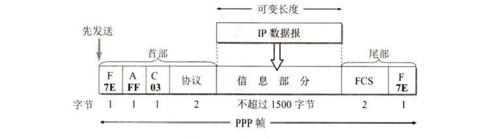
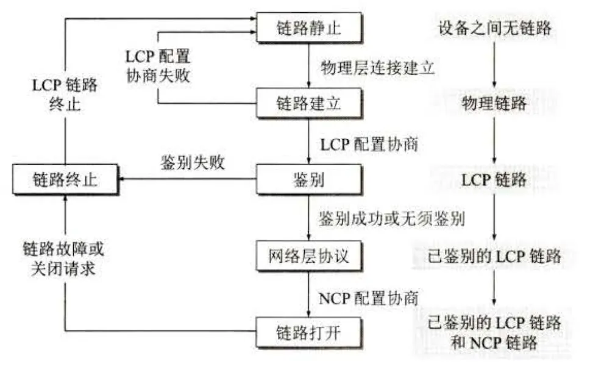
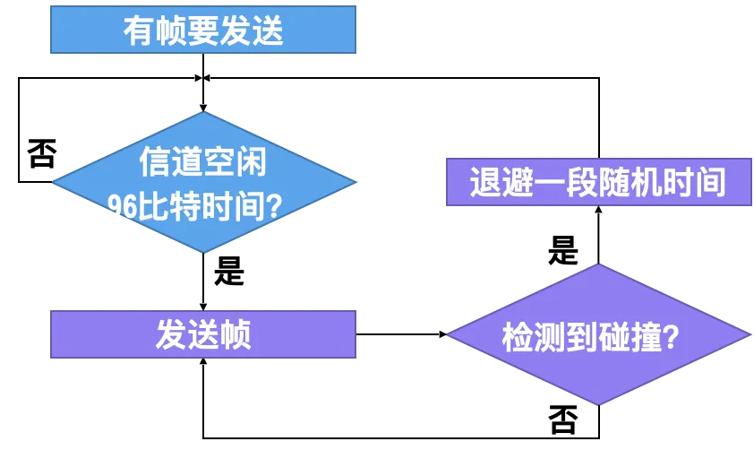
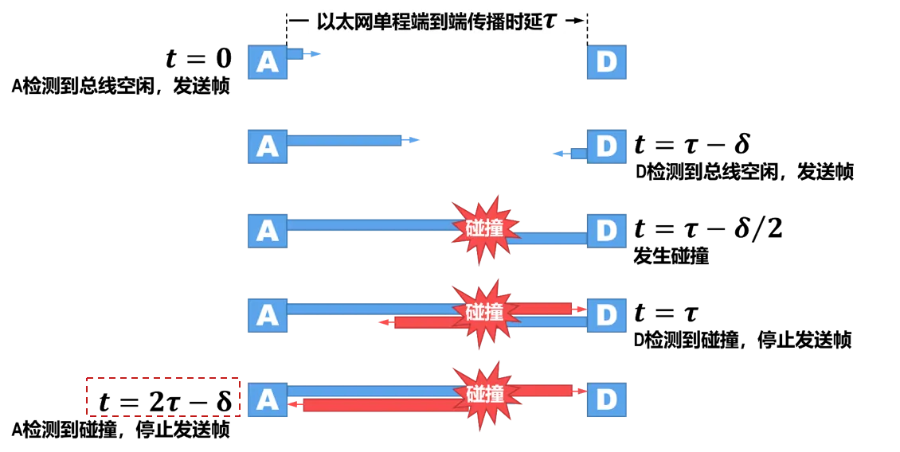
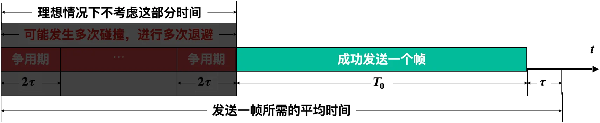
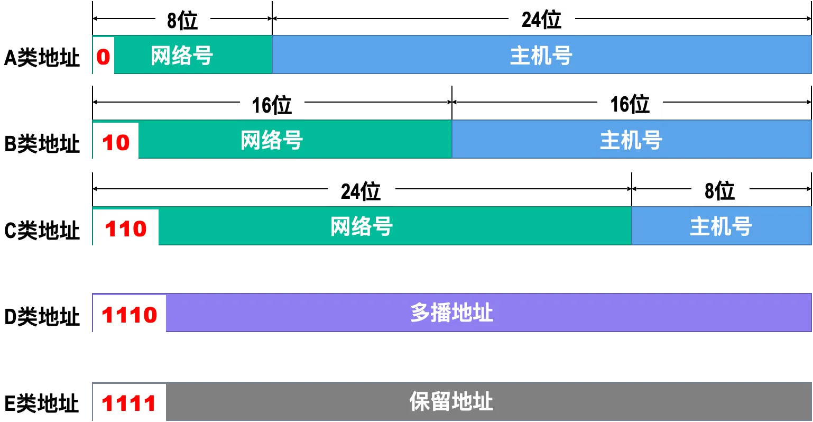
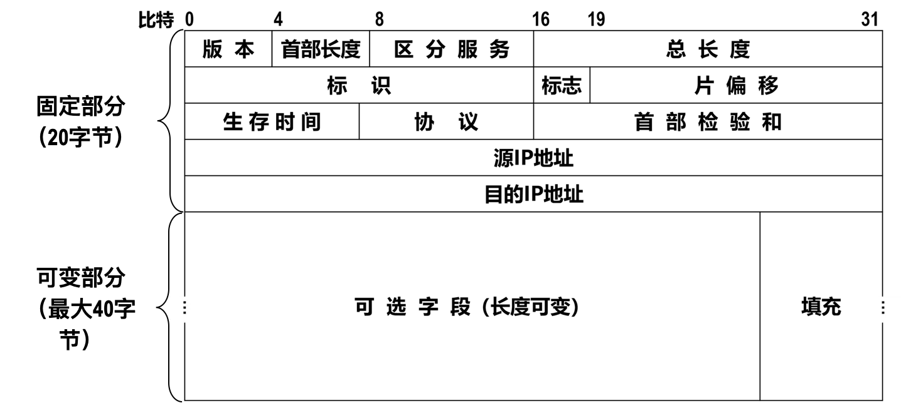

# 绪论
# 计算机网络定义
计算机网络是互连的、自治的计算机集合。
计算机网络向用户可以提供连通性和共享服务
# 互联网的组成
# 边缘部分
由各主机构成，用户直接进行信息处理和信息共享；低速连入核心网。
# 客户 / 服务器模式
- 客户：被用户调用后运行，在打算通信时主动向远地服务器发起通信，必须知道服务器的地址；不需要很特殊的硬件和很复杂的操作系统
- 服务器：一种专门用来提供某种服务的程序，可以同时处理多个客户的请求；系统启动后即自动调用并一直不断地运行着，被动地等待着来自各地的客户端的请求，不需要知道客户端的地址；一般需要强大的硬件和高级的操作系统
# 对等连接
- 对等连接：两个对等的进程之间的通信，两个进程在通信时既可以是客户也可以是服务器，两个进程之间的关系是对等的，没有主从之分
# 核心部分
在网络核心部分其特殊作用的是路由器。路由器是实现分组交换的关键构件。由各路由器连网，负责为边缘部分提供高速远程分组交换。
# 电路交换的特点
- 电路交换：在通信开始前，通信的两端要先建立一条专用的物理通路，通信结束后再撤销这条通路
- 面向连接的
- 电路交换的三个阶段：建立连接、通信、释放连接
- 优点：端对端通信质量因约定了通信资源获得可靠保障，对连续传送大量数据效率高
- 缺点：电路交换传输计算机数据效率低。
# 报文交换的特点
- 报文交换：通信的两端不需要先建立专用的物理通路，而是直接向网络发送报文，报文中包含目的地址，网络根据目的地址选择合适的路径传送报文、
- 优点：无须预约传输带宽，动态逐段利用传输带宽对突发式数据通信效率高，通信迅速。
- 缺点：时延较长
# 分组交换的特点
- 分组交换：报文交换的基础上，将报文划分为固定长度的数据块，称为分组，每个分组都携带有目的地址，网络根据目的地址选择合适的路径传送分组
- （1）报文分组，加首部（2）经路由器储存转发（3）在目的地合并
- 优点：
- 高效：动态分配传输带宽，对通信链路是逐段占用
- 灵活：以分组为传送单位和查找路由
- 迅速：不必先建立连接就能向其他主机发送分组
- 可靠：保证可靠性的网络协议；分布式的路由选择协议使网络具有很好的生存性
- 问题：
- 分组在各节点存储转发，需要缓存和排队，增加了时延
- 分组必须携带的首部也造成了一定开销
# 计算机网络的分类
# 按网络的作用范围分类
- 广域网（WAN）：覆盖范围广，跨越城市、国家、甚至全球
- 城域网（MAN）：覆盖范围小，跨越一个城市
- 局域网（LAN）：覆盖范围更小，跨越一个建筑物或者一个校园
- 个人区域网（PAN）：覆盖范围更小，跨越个人工作空间
# 按网络的使用者分类
- 公用网：为大众提供服务，如电话网、互联网
- 专用网：为某个组织或个人提供服务，如企业网、家庭网
# 计算机网络的性能
# 速率
- 速率：数据传输速率，指单位时间内传输的数据量
# 带宽
- 带宽：信道的传输能力，指单位时间内通过信道的最高数据率
# 吞吐量
- 吞吐量：单位时间内通过网络的实际数据量
# 时延
- 时延：数据从网络的一端传输到另一端所需的时间
- 发送时延：
- 传播时延：
- 处理时延：数据包在路由器中排队、检错、转发所需的时间
- 排队时延：数据包在路由器的输出队列中等待传输所需的时间
- 总时延：
# 时延带宽积
- 时延带宽积：
- 时延带宽积反映了网络中的数据量
# 往返时间 RTT
- 往返时间 RTT：数据从发送端发送到接收端，再返回发送端所需的时间
# 利用率
- 利用率：信道的利用率，指信道被占用的时间比例
- 网络利用率：全网络信道利用率的加权平均值
- 时延 与网络利用率 的关系：， 是网络利用率，数值在 0-1 之间
# 计算机网络的非性能指标
- 费用
- 质量
- 标准化
- 可靠性
- 可扩展性和可升级性
- 易于管理和维护
# 计算机网络的体系结构
# 协议与划分层次
- 协议是进行网络中的数据交换而建立的规则、标准或约定，是控制两个对等实体进行通信的规则的集合。在协议的控制下，两个对等实体间的通信使得本层能够向上一层提供服务，而要实现本层协议，还需要使用下面一层提供服务。
- 实体（entity）表示任何可发送或接收信息的硬件或软件进程
- 协议栈：指计算机网络体系结构采用分层模型后，每层的主要功能由对等层协议的运行来实现，因而每层可用一些主要协议来表征，几个层次画在一起很像一个栈的结构.
- 对等层：在网络体系结构中，通信双方实现同样功能的层
- 协议数据单元：对等层实体进行信息交换的数据单位
- 服务访问点：在同一系统中相邻两层的实体进行交互（即交换信息）的地方
- 服务访问点 SAP 是一个抽象的概念，它实体上就是一个逻辑接口
协议和服务的概念的区分
- 协议的实现保证了能够向上一层提供服务。本层的服务用户只能看见服务而无法看见下面的协议。下面的协议对上面的服务用户是透明的。
- 协议是 “水平的”，即协议是控制两个对等实体进行通信的规则。但服务是 “垂直的”，即服务是由下层通过层间接口向上层提供的。上层使用所提供的服务必须与下层交换一些命令，这些命令在 OSI 中称为服务原语。
# 网络协议的组成要素
- 语法：数据与控制信息的结构或格式
- 语义：需要发出何种控制信息，完成何种动作以及做出何种响应。
- 同步：即事件实现顺序的详细说明。
# 接口
接口：同一结点相邻两层间交换信息的连接点，系统内部规定，同一结点相邻两层的实体通过服务访问点 SAP 进行交互，是抽象概念
# OSI 参考模型和 TCP/IP 参考模型
| OSI | TCP/IP | 信息格式 |
|---|---|---|
| 应用层 | 应用层 | 报文流 |
| 表示层 | ||
| 会话层 | ||
| 传输层 | 传输层（TCP、UDP） | 分组 |
| 网络层 | 网络互联层（IP） | IP 数据报 |
| 数据链路层 | 网络接口层 | 帧比特流 |
| 物理层 |
# 分层的好处
- 各层之间是独立的
- 灵活性好
- 结构上可分割开
- 易于实现和维护
- 能促进标准化工作
# 物理层
# 物理层的基本概念
# 物理层要解决哪些问题
- 物理层要尽可能地屏蔽掉物理设备和传输媒体，通信手段的不同，使数据链路层感觉不到这些差异，只考虑完成本层的协议和服务。
- 给其服务用户（数据链路层）在一条物理的传输媒体上传送和接收比特流（一般为串行按顺序传输的比特流）的能力，为此，物理层应该解决物理连接的建立、维持和释放问题。
- 在两个相邻系统之间唯一地标识数据电路
# 物理层的主要特点
- 由于在 OSI 之前，许多物理规程或协议已经制定出来了，而且在数据通信领域中，这些物理规程已被许多商品化的设备所采用，加之，物理层协议涉及的范围广泛，所以至今没有按 OSI 的抽象模型制定一套新的物理层协议，而是沿用已存在的物理规程，将物理层确定为描述与传输媒体接口的机械，电气，功能和规程特性。
- 由于物理连接的方式很多，传输媒体的种类也很多，因此，具体的物理协议相当复杂。
# 物理层的主要任务
主要任务：确定与传输媒体的接口的一些特性
- 机械特性：接口的几何形状、引脚数目、引脚位置等
- 电气特性：指明在接口电缆的各条线上出现的电压的范围
- 功能特性：指明某条线上出现的某一电平的电压表示何意。
- 归程特性：指明对于不同功能的各种可能事件的出现顺序
# 数据通信的基础知识
# 数据通信系统的模型
一个数据通信系统包括三大部分：原系统、传输系统和目的系统
# 常用术语
- 数据：运送信息的实体
- 信号：数据的电气或电磁的表现
- 码元：在一定时间间隔内的信号的离散数值
- 模拟信号：代表消息的参数的取值是连续的
- 数字信号：代表消息的参数的取值是离散的
目前主流：数字信道通信
优点：抗干扰能力强，传输差错可控制、便于处理、便于加密、可以综合传递各种信息
数字通信可以传递数字信号，也可以传递经过数字化处理的模拟信号
# 信道的基本概念
信道：一般用来表示像某一个方向传送信息的媒体，与通信电路不同
# 通信双方的交互方式
- 单工通信（单向通信）：只能有一个方向的通信
- 半双工通信（双向交替通信）：通信的双方都可以发送和接收信息，但不能同时进行
- 全双工通信（双向同时通信）：通信的双方可以同时发送和接收信息
# 基带信号的调制
基带信号（即基本频带的信号）：来自信源的型号信号，一般是低频信号，不能直接用于传输，需要调制
# 基带调制（编码）
- 仅对波形进行变换，使他能与信道的基本特性相适应，仍是数字信号
- 信息传输之前编码：传输编码
- 提高抗干扰能力；
- 携带同步信息实现同步；
- 可实现纠错检偏；
- 降低传输损耗；
- 简化传输设备；

- 不归零制：正电平表示 1，负电平表示 0
- 归零制：正脉冲表示 1，负脉冲表示 0
- 曼彻斯特编码：位周期中心向上跳变表示 0，中心向下跳变表示 1，但也可以反过来
- 差分曼彻斯特编码：位开始边界有跳变表示 0，无跳变表示 1
曼彻斯特编码和差分曼彻斯特编码具有自同步性
# 带通调制
- 带通信号：需要载波
- 把型号的频率范围搬移到较高的频段，并转换为模拟信号，以便在模拟信道上传输
- 仅在一段频率范围内能够通过信道

- 调幅（AM）：调制信号的幅度随基带信号的变化而变化
- 调频（FM）：调制信号的频率随基带信号的变化而变化
- 调相（PM）：调制信号的初始相位随基带信号的变化而变化
# 信道的极限容量
# 影响因素
- 信道能够通过的频率范围
- 信道的信噪比
# 信道的极限容量 —— 带宽
- 信道的带宽：物理信道能过允许顺利通过的最大的连续频率范围
- 带宽是传输介质的一种物理特征，通常取决于介质的材料构成、厚度和长度
- 信道的带宽越宽，能够通过的信号高频分量越多，可以用更高的速率传送码元而不出现码间串扰
- 码间串扰：如果高频分量在传输时受到衰减，码元之间的界限就会变得模糊，这种现象称为码间串扰
# 奈氏准则
在带宽为（ Hz）的低通信道中，极限码元传输速率 波特，极限信息传输速率（bps）满足：，其中 代表不同的码元数
# 信道的极限容量 —— 信噪比
- 信噪比：信号功率与噪声功率之比，常记为，单位为分贝，
# 香农定理
- 香农定理：在有高斯白噪声的信道中，极限信息传输速率（bps）满足：，其中 为信道的带宽， 为信号功率， 为噪声功率
码元传输速率受奈氏准则的限制，信息传输速率受香农公式的限制
香农公式在数据通信中的意义是：只要信息传输速率低于信道的极限传信率，就可实现无差传输。
bit/s（bps）是信息传输速率的单位
码元传输速率，单位波特（Baud），也称为调制速率、波形速率或符号速率。
一个码元不一定对应于一个比特
# 物理层下面的传输媒体
# 导引型传输媒体
| 传输媒体 | 分类 | 优点 | 缺点 |
|---|---|---|---|
| 双绞线 | 屏蔽双绞线（STP） | 价格低、安装方便、易于维护 | 传输距离短（几到十几公里）、传输速率低、易受干扰、传输误码率高 |
| 非屏蔽双绞线（UTP） | |||
| 同轴电缆 | 50Ω 同轴电缆：LAN / 数字传输 | 传输距离远、传输速率高、抗干扰能力强 | 安装维护困难、价格高 |
| 75Ω 同轴电缆：有线电视 / 模拟传输 | |||
| 光纤 | 多模光纤（近距离） | 电磁绝缘性能好、信号衰减小、频带较宽、传输距离较大（100km 以上）、传输误码率低、保密性好 | 断裂连接非常困难、技术要求高、成本高 |
| 单模光纤（远距离） |
# 非导引型传输媒体
- 短波通信：通信质量差，传输速度低
- 微波在空间直线传播，分为地面微波接力通信和卫星通信
# 数据链路层
# 三个基本问题
# 封装成帧
封装成帧 (framing) 就是在一段数据的前后分别添加首部和尾部，这样就构成了一个帧。接收端在收到物理层上交的比特流后，就能根据首部和尾部的标记，从收到的比特流中识别帧的开始和结束。
首部和尾部的一个重要作用就是进行帧定界 (即确定帧的界限)。此外，首部和尾部还包括许多必要的控制信息。在发送帧时，是从帧首部开始发送的。
每一种链路层协议都规定了所能传送的帧的数据部分长度上限 - 最大传送单元 MTU (Maximum Transfer Unit)
# 透明传输
透明传输是指在数据链路层传输数据时，不对数据进行任何修改，即不对数据进行加字节、删字节、改字节等操作。这样，接收端收到的数据与发送端发送的数据完全一样。
# 差错检测
差错检测是指在数据链路层传输数据时，对数据进行差错检测，以保证数据的正确传输。差错检测的方法有很多种，常用的有循环冗余检测 CRC (Cyclic Redundancy Check) 和纵向奇偶校验 VRC (Vertical Redundancy Check)。
# 循环冗余检测 CRC
CRC 是一种差错检测方法，它是通过对数据进行除法运算来检测数据中的差错。CRC 的基本思想是：在发送端，将数据 D 与一个固定的除数 G 进行除法运算，得到余数 R，然后将 R 附加到数据 D 的后面一起发送出去；在接收端，将接收到的数据与除数 G 进行除法运算，如果余数为 0，则说明数据传输正确，否则说明数据传输错误。
- 构造 “被除数”: 待发送数据后面添加生成多项式最高次数个 0
- 构造 “除数”: 生成多项式各项系数构成的比特串作为除数
- 做 “二进制模 2 除法”: 相当于对应位进行逻辑异或运算
- 检查 “余数”: 余数的位数应与生成多项式最高次数相同， 如果位数不够，则在余数前补 0 来凑足位数。
在接收端对收到的每一帧经过 CRC 检验后，有以下两种情况:
- 若得出的余数 R=O, 则判定这个帧没有差错，就接受 (accept)。
- 若余数 R # O, 则判定这个帧有差错 (但无法确定究竟是哪一位或哪几位出现了差
错)，就丢弃。
一种较方便的方法是用多项式来表示循环冗余检验过程。在上面的例子中，用多项式 P (X) = X3 + X2 + 1 表示上面的除数 P = 1101 (最高位对应于 X3，最低位对应于 X0)。多项式 P (X) 称为生成多项式。
最后再强调一下，在数据链路层若仅仅使用循环冗余检验 CRC 差错检测技术，则只能做到对帧的无差错接受，即:“凡是接收端数据链路层接受的帧，我们都能以非常接近于 1 的概率认为这些帧在传输过程中没有产生差错 "。接收端丢弃的帧虽然曾收到了，但最终还是因为有差错被丢弃，即没有被接受。以上所述的可以近似地表述为 (通常都是这样认为):“凡是接收端数据链路层接受的帧均无差错”。
# 点对点协议 PPP
# PPP 帧的格式

PPP 帧的格式如上图所示，它由 7 个部分组成，各部分的含义如下:
- 帧起始标志 (Flag)：一个字节，固定为 01111110（7E），表示一个帧的开始。
- 地址 (Address)：一个字节，固定为 11111111（FF）
- 控制 (Control)：一个字节，固定为 00000011（03）
- 协议 (Protocol)：两个字节，表示上层协议的类型，如 IP 协议的类型为 0x0021。
- 信息 (Information)：0 到多个字节，表示上层协议的数据。
- 帧校验序列 (FCS)：两个字节，表示帧校验序列，用于差错检测。
- 帧结束标志 (Flag)：一个字节，固定为 01111110（7E），表示一个帧的结束。
# PPP 帧的透明传输
# 字节填充（异步传输）
7E->7D 5E7D->7D 5D- 若信息字段中出现 ASCII 码的控制字符 (即数值小于
Ox20的字符)，则在该字符前面要加入一个Ox7D字节，同时将该字符的编码加以改变。例如，出现Ox03(在控制字符中 是 “传输结束 “ETX) 就要把它转变为 2 字节序列 (7D 23)
# 零比特填充（同步传输）
如果数据中出现了连续的 5 个 1 ，则在这 5 个 1 之后插入一个 0 。
# PPP 帧的工作状态

# CSMA/CD 协议
CSMA/CD 协议是一种多路访问协议，它的全称是 Carrier Sense Multiple Access with Collision Detection，即带冲突检测的载波监听多路访问协议。CSMA/CD 协议的工作原理如下:
- 多址接入：多个站点共享一个信道
- 载波监听：在发送数据之前，先监听信道，如果信道空闲，则发送数据；如果信道忙，则等待
- 若检测到总线空闲 96 比特时间（发送 96 比特所耗费的时间，也称为帧间最小间隔），则发送这个帧；
- 若检测到总线忙，则继续检测并等待总线转为空闲 96 比特时间，然后发送这个帧。
- 碰撞检测：如果发送数据的同时，检测到信道上有其他数据，说明发生了碰撞，立即停止发送数据，并发送一个特殊的信号，以通知其他站点发生了碰撞，然后等待一段时间后再次发送数据
- 强化碰撞： 发送帧的站点一旦检测到碰撞，除了立即停止发送帧外，还要再继续发送 32 比特或 48 比特的人为干扰信号（Jamming Signal），以便有足够多的碰撞信号使所有站点都能检测出碰撞。

显然，在使用 CSMA/CD 协议时，一个站不可能同时进行发送和接收 (但必须边发送边监听信道)。因此使用 CSMA/CD 协议的以太网不可能进行全双工通信而只能进行双向交替通信 (半双工通信)。
# 争用期
站点从发送帧开始，最多经过时长（即）就可检测出所发送的帧是否遭遇了碰撞。
因此，共享总线以太网的端到端往返时间 被称为争用期（Contention Period）或碰撞窗口（Collision Window），它是一个非常重要的参数。

10Mb/s 共享总线以太网（传统以太网）规定：争用期 的值为 512 比特的发送时间，即。
# 二进制指数退避算法
退避时间 = 争用期 * 随机数
- 争用期：
- 随机数：0-2k-1，k=min (n,10)，n 为重传次数，若重传次数达到 16 次，则放弃发送并向上层报告
# 信道利用率

极限信道利用率：，其中， 为信道传播时延
# 使用集线器的星形拓扑
# 星形以太网 10Base-T
- 10：传输速率为 10Mb/s
- Base：基带传输
- T：双绞线
# 集线器的特点
- 集线器是使用电子器件来模拟实际电缆线的工作，因此整个系统仍然像一个传统的以太网那样运行。
- 使用集线器的以太网在逻辑上仍是一个总线网，各工作站使用的还是 CSMA/CD 协议，并共享逻辑上的总线。
- 集线器很像一个多接口的转发器，工作在物理层。
- 集线器采用了专门的芯片，进行自适应串音回波抵消，减少了近端串音。
# 以太网的 MAC 层
# MAC 层的硬件地址
- 前 24 位：厂商编号
- 后 24 位：序列号
# I/G 位
- I/G 位：第一个字节的最低位，指示地址是单播地址还是组播地址
- I=0：单播地址（单站地址）
- I=1：组播地址（组地址）
- I=1，G=1：广播地址（全 48 位为 1）
# G/L 位
- G/L 位：第一个字节的次低位，指示地址是全局地址还是本地地址
- G=0：全局地址
- G=1：本地地址
# 适配器检查
- 适配器检查：接收到的帧的目的地址与适配器的地址进行比较，如果不匹配，则丢弃
- 单播帧（一对一）：目的地址与适配器地址匹配
- 广播帧（一对所有）：目的地址为全 1
- 多播帧（一对多）：目的地址为多播地址
- 混杂模式：适配器接收所有帧，不进行适配器检查，适用于网络分析（嗅探器）
# MAC 层的帧格式
# 以太网 v2 帧格式
| 目的地址 | 源地址 | 类型 | 数据 | FCS |
|---|---|---|---|---|
| 6 字节 | 6 字节 | 2 字节 | 46-1500 字节 | 4 字节 |
- 目的地址：6 字节，接收方的 MAC 地址
- 源地址：6 字节，发送方的 MAC 地址
- 类型：2 字节，表示上层协议的类型，如 IP 协议的类型为 0x0800
- 数据：46-1500 字节，表示上层协议的数据
- FCS：4 字节，帧校验序列，用于差错检测
- 以太网 v2 帧格式中的数据部分长度上限为 1500 字节，即 MTU 为 1500 字节
- 以太网 v2 帧格式中的数据部分长度下限为 46 字节，即数据部分长度不足 46 字节时，要用填充字节进行填充
- 还需要在前面插入 8 个字节，第 — 个字段是 7 个字节的前同步码 (1 和 0 交替码)，它的作用是 使接收端的适配器在接收 MAC 帧时能够迅速调整其时钟频率，使它和发送端的时钟同步， 也就是 “实现位同步”(位同步就是比特同步的意思)。第二个字段是帧开始定界符，定义为 10101011。它的前六位的作用和前同步码一样，MAC 帧的 FCS 字段的检验范围不包 括前同步码和帧开始定界符
# 无效帧
- 帧的长度不是整数个字节:
- 用收到的帧检验序列 FCS 查出有差错；
- 收到的帧的 MAC 客户数据字段的长度不在 46~1500 字节之间。考虑到 MAC 帧首部和尾部的长度共有 18 字节，可以得出有效的 MAC 帧长度为 64~1518 字节之间。
对于检查出的无效 MAC 帧就简单地丢弃。以太网不负责重传丢弃的帧。
# IEEE 802.3 和以太网 v2 的区别
- IEEE 802.3 规定的 MAC 帧的第三个字段是 “长度 / 类型”。
- 当 “长度 / 类型” 字段值小于 Ox0600 时，数据字段必须装入上面的逻辑链路控制 LLC 子层的 LLC 帧。
- 在 802.3 标准的文档中，MAC 帧的帧格式包括了 8 字节的前同步码和帧开始定界符。
# 拓展的以太网
# 在物理层拓展以太网
- 光纤
- 集线器
- 优点：使原来属于不同碰撞域的以太网上的计算机能够进行跨碰撞域的通信；扩大了以太网覆盖的地理范围。
- 缺点：一个系的和连起来三个系的总的吞吐量一样；不能连接不同数据率的碰撞域。
# 在数据链路层拓展以太网
# 网桥
网桥对收到的帧根据其 MAC 帧的目的地址进行转发和过滤。 当网桥收到一个帧时，并不是向所有的端口转发此帧，而是根据此帧的目的 MAC 地址，查找网桥中的地址表，然后确定将该帧转发到哪一个端口，或者是把它丢弃 (即过滤)。
# 交换机
以太网交换机实质上就是一个多端口的网桥，通常都有十几个或更多的端口，和工作在物理层的转发器、集线器有很大的差别。以太网交换机的每个端口都直接与一个单台主机或另一个以太网交换机相连，并且一般都工作在全双工方式。以太网交换机还具有并行性，即能同时连通多对端口，使多对主机能同时通信 (而网桥只能一次分析和转发一个帧)。相互通信的主机都独占传输媒体，无碰撞地传输数据。换句话说，每一个端口和连接到端口的 主机构成了一个碰撞域，具有 N 个端口的以太网交换机的碰撞域共有 N 个。
# 以太网交换机的自学习机制
以太网交换机的自学习机制是指以太网交换机在工作过程中，能够自动学习网络中各个主机的 MAC 地址，并根据学习到的 MAC 地址建立地址表，以便在转发帧时能够快速地查找目的地址。
以太网交换机的自学习机制的基本原理如下:
- 当以太网交换机收到一个帧时，它首先检查帧的源 MAC 地址，然后查找地址表，看看这个源 MAC 地址是否已经在地址表中。
- 如果源 MAC 地址不在地址表中，则将源 MAC 地址和接收到这个帧的端口号添加到地址表中。
- 如果源 MAC 地址已经在地址表中，则更新源 MAC 地址的时间戳。
- 然后，以太网交换机检查帧的目的 MAC 地址，查找地址表，看看这个目的 MAC 地址是否在地址表中。
- 如果目的 MAC 地址在地址表中，则查找目的 MAC 地址对应的端口号，并将这个帧转发到这个端口。
- 如果目的 MAC 地址不在地址表中，则将这个帧转发到除接收到这个帧的端口外的所有端口。
- 以太网交换机还会定期地检查地址表中的条目，如果某个条目的时间戳超过了一定的时间，则将这个条目从地址表中删除。
# 虚拟局域网 VLAN
# 802.1Q 协议
| 目的地址 | 源地址 | VLAN 标识 | 类型 | 数据 | FCS |
|---|---|---|---|---|---|
| 6 字节 | 6 字节 | 4 字节 | 2 字节 | 46-1500 字节 | 4 字节 |
| TPID | PRI | CFI | VLAN ID | ||
| --- | --- | --- | --- | ||
| 2 字节（16 位） | 3 位 | 1 位 | 12 位 |
- VLAN 标识：4 字节，表示 VLAN 的标识
- TPID：2 字节，固定为 0x8100
- PRI：3 位，优先级
- CFI：1 位，规范位
- VLAN ID：12 位，VLAN 的标识，0 和 4095 保留
# 网络层
# 网际协议 IP
# IPv4 地址
# IPv4 地址的分类编址

| 类别 | 最小可指派网络号 | 最大可指派网络号 | 可指派网络数量 | 每个网络最大可分配地址数量 | 不能指派的网络号 |
|---|---|---|---|---|---|
| A | 1 | 126 | 28-1-2 | 224-2 | 0 和 127 |
| B | 128.0 | 191.255 | 216-2 | 216-2 | 无 |
| C | 192.0.0 | 223.255.255 | 224-3 | 28-2 | 无 |
# 子网划分
子网掩码可以表明分类 IPv4 地址的主机号部分被借用了几个比特作为子网号。
- 用左起多个连续的比特 1 对应 IPv4 地址中的网络号和子网号；
- 之后的多个连续的比特 0 对应 IPv4 地址中的主机号。
- 将划分子网的 IPv4 地址与相应的子网掩码进行逐比特的逻辑与运算，就可得到该 IPv4 地址所在子网的网络地址。
# 无分类编址 CIDR
无分类的两级编址的记法是： IP地址/前缀长度 或 {<网络前缀>,<主机号>}
# 地址解析协议 ARP
ARP 协议是一种地址解析协议，它的作用是将网络层的 IP 地址解析为数据链路层的 MAC 地址。
ARP 协议的工作原理如下:
- 主机 A 发送一个 ARP 请求分组，该分组内容为 “我是主机 A，我的 IP 地址是 xxx，我的 MAC 地址是 yyy，我要找到 IP 地址为 zzz 的主机的 MAC 地址”。
- 所有的主机都接收到这个 ARP 请求分组、
- 主机 B 收到 ARP 请求分组后，发现自己的 IP 地址与 ARP 请求分组中的 IP 地址相同，就收下这个 ARP 请求分组，并向主机 A 发送一个 ARP 响应分组，同时在这个 ARP 响应分组中包含自己的 MAC 地址，即 “我的 IP 地址是 zzz，我的 MAC 地址是 www”。
- 主机 A 收到 ARP 响应分组后，就在自己的 ARP 缓存表中添加一条主机 B 的 IP 地址和 MAC 地址的映射。
当主机 A 向 B 发送数据报时，很可能以后不久主机 B 还要向 A 发送数据报，因而主机 B 也可能要向 A 发送 ARP 请求分组。为了减少网络上的通信量，主机 A 在发送其 ARP 请求分组时，就把自己的 IP 地址到 MAC 地址的映射写入 ARP 请求分组。当主机 B 收到 A 的 ARP 请求分组时，就把主机 A 的这一地址映射写入主机 B 自己的 ARP 高速缓存中。以后 主机 B 向 A 发送数据报时就很方便了。
- ARP 请求分组的目的地址是广播地址，即全 1，路由器不转发广播分组，因此 ARP 请求分组只能在一个局域网中传播。
- 如果所要找的主机和源主机不在同一个局域网上，那么就要通过 ARP 找到一个位于本局域网上的某个路由器的硬件地址，然后把分组发送给这个路由器，让这个路由器把分组转发给下一个网络。剩下的工作就由下一个网络来做。
# ARP 的四种典型情况
- 发送方是主机，要把 IP 数据报发送到本网络上的另一个主机。这时用 ARP 找到目的主机的硬件地址。
- 发送方是主机，要把 IP 数据报发送到另一个网络上的一个主机。这时用 ARP 找到本网络上的一个路由器的硬件地址。剩下的工作由这个路由器来完成。
- 发送方是路由器，要把 IP 数据报转发到本网络上的一个主机。这时用 ARP 找到目的主机的硬件地址。
- 发送方是路由器，要把 IP 数据报转发到另一个网络上的一个主机。这时用 ARP 找到本网络上另一个路由器的硬件地址。剩下的工作由这个路由器来完成。
# IP 数据报的格式

- 版本：4 位，IPv4
- 首部长度：4 位，单位为 4 字节，最小值为 5，最大值为 15
- 区分服务：8 位，用于指定数据报的优先级和服务质量
- 总长度：16 位，指定整个 IP 数据报的长度，单位为字节
- 标识：16 位，用于标识数据报的分片。IP 软件在存储器中维持一个计数器，每产生一个数据报，计数器就加 1, 并将此值赋给标识字段。
- 标志：3 位，用于指定数据报的分片情况
- 位 0：保留位，必须为 0
- 位 1：DF（Don't Fragment），禁止分片，DF=1 时，数据报不能分片
- 位 2：MF（More Fragment），更多分片，MF=1 时，表示后面还有分片
- 片偏移：13 位，指定数据报片的相对位置，单位为 8 字节
- 生存时间：8 位，指定数据报在网络中的生存时间，单位为跳数
- 协议：8 位，指定上层协议的类型，如 TCP 协议的类型为 0x06
- 首部校验和：16 位，用于检验 IP 首部的正确性
- 源地址：32 位，指定数据报的源 IP 地址
- 目的地址：32 位，指定数据报的目的 IP 地址
- 可选字段：可选，用于指定 IP 数据报的选项
# 首部检验和计算
- 首部检验和：16 位，用于检验 IP 首部的正确性
- 首部检验和的计算方法是：将 IP 首部中的所有 16 位字相加，如果有溢出，则将溢出部分回卷到低位，然后取反，得到的结果就是首部检验和。